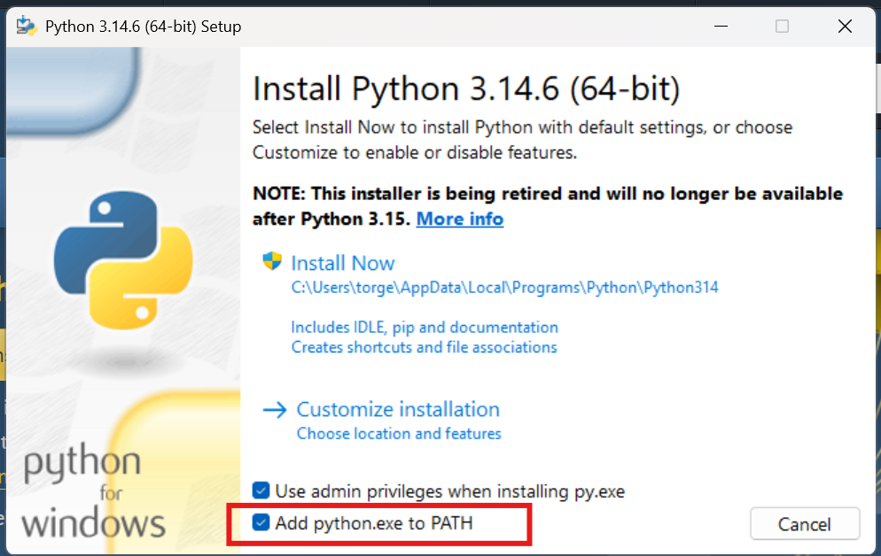
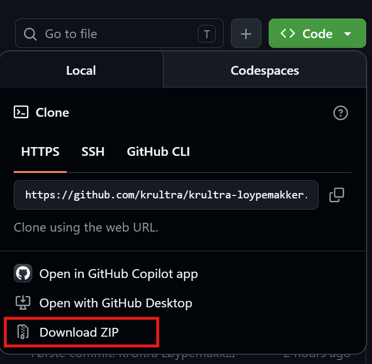

KrUltra Løypemakker (KUL)
KrUltra Løypemakker (KUL)
Installasjon — KrUltra Løypemakker (KUL)
Denne guiden er skrevet for deg som ikke er så vant med programvareutvikling. Du trenger ikke kunne noe om programmering. Følg stegene i rekkefølge, så er du i gang på noen få minutter. Veilederen forutsetter at du bruker Windows, men det er fullt mulig å installere på Linux eller Mac også hvis du tilpasser kommandoene til det aktuelle operativsystemet.
Du gjør dette én gang. Etterpå starter du verktøyet ved å dobbeltklikke
KUL.bat(se nederst).
Steg 1: Installer Python (gratis)
Har du Python fra før? Da kan du hoppe over dette steget. Slik sjekker du det: Åpne en terminal/kommandolinje (f.eks. ved å trykke windows-tast+R, skriv "cmd" og trykk Enter) og skriv: python --version Hvis du får en versjon som minst er 3.10 eller høyere (f.eks. 3.14.9), har du det du trenger av Python allerede. Hvis ikke, fortsett med dette steget.
Python er «motoren» verktøyet kjører på. Det er gratis og trygt.
- Gå til python.org/downloads i nettleseren.
- Last ned den nyeste versjonen av Python for Windows.
- Åpne fila som lastes ned.
- VIKTIG: helt nederst i installasjonsvinduet, huk av «Add python.exe to PATH» før du klikker videre. Dette er det eneste du må huske på.

- Klikk «Install Now» og vent til det står «Setup was successful». Lukk vinduet.
Steg 2: Last ned KrUltra Løypemakker
- Gå til prosjektets side på GitHub: https://github.com/krultra/krultra-loypemakker
- Klikk den grønne knappen «Code», og velg «Download ZIP».

- Finn ZIP-fila i nedlastingsmappa, høyreklikk den og velg
«Pakk ut alle» (Extract All). Velg en mappe du finner igjen, for
eksempel
Dokumenter.
Nå har du en mappe som heter krultra-loypemakker (eller lignende) med
alle filene i.
Steg 3: Start verktøyet
- Åpne mappa du pakket ut.
- Dobbeltklikk fila
KUL.bat. - Et svart vindu åpner seg. Første gang tar det et par minutter — verktøyet henter automatisk det det trenger. La vinduet være åpent.
- Nettleseren åpner seg av seg selv på verktøyet. Skjer det ikke, skriv
inn
http://127.0.0.1:8000i nettleseren.
Ser du en advarsel fra Windows («Windows beskyttet PC-en din»)? Det er fordi fila er ny og ukjent for Windows, ikke fordi noe er galt. Klikk «Mer info» og deretter «Kjør likevel».
Det var alt! Verktøyet kjører nå lokalt på din egen PC. Ingen data sendes ut på nett — alt bor på maskinen din.
Hver gang senere
- Start: dobbeltklikk
KUL.bat. (Nå går det fort — nedlastingen i steg 3 skjer bare første gang.) - Avslutt: lukk det svarte vinduet.
Tips: høyreklikk KUL.bat → «Send til» → «Skrivebord (opprett
snarvei)», så har du en snarvei på skrivebordet du kan starte fra.
Hvis noe ikke virker
| Problem | Løsning |
|---|---|
| «Fant ikke Python på denne maskinen» | Python er ikke installert, eller «Add to PATH» ble ikke huket av i steg 1. Installer på nytt og husk avhukingen. |
| Det svarte vinduet lukker seg med en gang | Start på nytt og les hva som står før det lukkes — som regel handler det om Python (se over). |
| Nettleseren viser en feil rett etter oppstart | Vent noen sekunder og trykk F5 (oppdater). Appen rakk ikke å starte helt. |
| «Windows beskyttet PC-en din» | Klikk «Mer info» → «Kjør likevel» (se over). |
Trenger du mer hjelp? Se BRUK.md for hvordan du bruker verktøyet, eller ta kontakt med KrUltra på post@krultra.no.